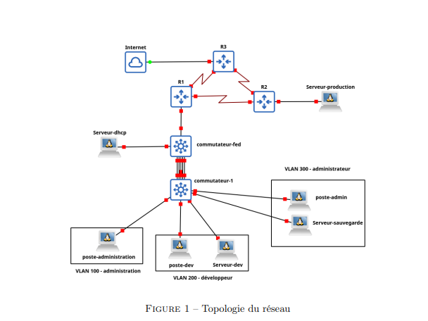

Fiche de suivi du projet
| Nom du projet | SAE 2.01 — Construire un réseau |
| Compétence visée | C1 — Administrer les réseaux et l'Internet (AC11.05 — Identifier les dysfonctionnements) |
| Semestre | Semestre 2 · BUT 1 |
| Durée | 07 Avril 2026 - 19 Mai 2026 |
| Technologies utilisées | GNS3 · VLAN · Routage inter-VLAN · RIP v2 · DHCP · FTP · Apache · rsync · ACL · Port-security |
| Compétences développées | Ce projet m’a permis de développer des compétences en administration réseau, notamment la configuration de VLAN, la mise en place du routage inter-VLAN et l’utilisation d’un protocole de routage dynamique comme RIP v2. J’ai également travaillé sur le déploiement de services réseau tels que DHCP, FTP et HTTP, ainsi que sur la sécurisation d’une infrastructure grâce aux ACL et à la sécurité des ports sur les commutateurs. |
| Plan d'action |
|
Synthèse du projet pour le portfolio
Contexte & objectif
Cette SAE avait pour objectif de construire un réseau local complet à l’aide du logiciel GNS3. Le projet consistait à mettre en place une infrastructure composée de commutateurs, de routeurs, de plusieurs VLAN et de différents serveurs. Il fallait également configurer des services réseau comme le DHCP, le FTP et un serveur Web, puis ajouter des règles de sécurité simples afin de contrôler les accès et protéger les équipements.
Technologies utilisées
 Cisco
Cisco
Compétences mobilisées
- AC11.02 — Comprendre l’architecture des systèmes numériques, des communications et de l’Internet.
- AC11.03 — Configurer les fonctions de base du réseau local : VLAN, routage inter-VLAN, adressage IP et services réseau.
- AC11.04 — Maîtriser les rôles des systèmes d’exploitation afin d’installer et configurer des services comme Apache, FTP et DHCP.
- AC11.05 — Identifier les dysfonctionnements du réseau local et corriger les erreurs de connectivité ou de configuration.
- AC11.06 — Installer un poste client et expliquer la procédure mise en place.
Déroulement & méthodologie
J’ai commencé par analyser la topologie demandée et par préparer le plan d’adressage IP avec un découpage en sous-réseaux. Ensuite, j’ai créé les VLAN 100, 200 et 300 afin de séparer les groupes d’utilisateurs : administration, développeurs et administrateurs. J’ai configuré le routage inter-VLAN, le protocole RIP v2 entre les routeurs, puis les services DHCP, FTP et Apache. Enfin, j’ai ajouté les règles de sécurité avec les ACL et le port-security avant de tester la connectivité entre les postes, les serveurs et le réseau extérieur.
Illustrations

Cette illustration présente la topologie générale du réseau à construire. On y retrouve les routeurs, les commutateurs, les différents serveurs et les trois VLAN principaux : VLAN 100 pour l’administration, VLAN 200 pour les développeurs et VLAN 300 pour les administrateurs.

Cette capture peut présenter la configuration des VLAN et du routage inter-VLAN sur le commutateur central. Cette étape permet aux différents réseaux logiques de communiquer tout en conservant une séparation claire entre les groupes d’utilisateurs.

Cette capture peut montrer les tests réalisés après configuration : vérification du DHCP, accès au serveur Web Apache, test FTP, communication entre VLAN et contrôle des accès grâce aux ACL. Ces tests permettent de valider le bon fonctionnement global du réseau.
Retour d'expérience
Ce que j'ai appris
Cette SAE m’a permis de mieux comprendre la construction complète d’un réseau local. J’ai appris à organiser un réseau avec plusieurs VLAN, à mettre en place un routage inter-VLAN et à utiliser un protocole de routage dynamique comme RIP v2. J’ai aussi renforcé mes compétences sur les services réseau, notamment DHCP, FTP, Apache et rsync. Enfin, la mise en place des ACL et du port-security m’a permis de mieux comprendre les premières mesures de sécurité réseau.
Ce que je ferais différemment
Avec du recul, je préparerais un plan d’adressage plus détaillé avant de commencer les configurations. Cela permettrait d’éviter les erreurs de sous-réseaux ou de passerelles. Je testerais aussi chaque étape plus progressivement : d’abord les VLAN, ensuite le routage, puis les services et enfin la sécurité. Cette méthode rendrait le dépannage plus simple en cas de problème de connectivité.